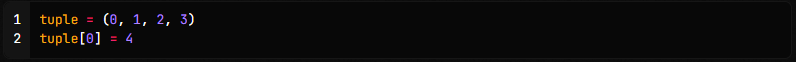

◉ Tipos de dados
➤ Os tipos de dados em Python são categorias que definem o tipo de valor que uma variável pode armazenar
e as operações que podem ser realizadas com esses valores.
Em outras palavras, eles determinam
como os dados são representados e tratados pelo interpretador Python.
Python possui vários tipos de dados incorporados (built-in) que estão disponíveis para uso imediato.
Alguns dos tipos de dados mais comuns em Python incluem:
➤ Números:
• int: representa números inteiros, como 5, -10, 100.
• float: representa números de ponto flutuante (números decimais), como 3.14, -2.5, 1.0.
➤ Sequências:
• str: representa sequências de caracteres, como "Olá", 'Python', "123".
• list: representa uma sequência mutável de elementos, separados por vírgula
e entre colchetes ([]), como [1, 2, 3], ['a', 'b', 'c'].
• tuple: representa uma sequência imutável de elementos, separados por vírgula e entre parênteses (()),
como (1, 2, 3), ('a', 'b', 'c').
➤ Mapeamentos:
• dict: representa uma coleção de pares chave-valor, onde cada valor é acessado através de sua chave,
como {'nome': 'João', 'idade': 25}.
Conjuntos:
• set: representa uma coleção não ordenada e sem elementos duplicados, como {1, 2, 3}, {'a', 'b', 'c'}.
• frozenset: representa um conjunto imutável, como frozenset({1, 2, 3}).
➤ Booleanos:
• bool: representa um valor booleano, que pode ser True (verdadeiro) ou False (falso).
Esses são apenas alguns exemplos dos tipos de dados em Python. Além dos tipos incorporados,
também é possível criar seus próprios tipos de dados personalizados usando classes.
◉ Tipo Inteiro (int)
O tipo inteiro é um tipo composto por caracteres numéricos (algarismos) inteiros.
É um tipo usado para um número que pode ser escrito sem um componente decimal, podendo
ter ou não sinal, isto é: ser positivo ou negativo.
Por exemplo, 21, 4, 0, e −2048 são números inteiros, enquanto 9.75, 1/2, 1.5 não são.
Exemplos:
◉ Tipo Decimal ou Flutuante (float)
É um tipo composto por caracteres numéricos (algarismo) decimais.
O famoso ponto flutuante é um tipo usado para números racionais (números que podem ser representados por uma fração)
informalmente conhecido como “número quebrado”.
Exemplos:
◉ Tipo Complexo (complex)
Tipo de dado usado para representar números complexos (isso mesmo,
aquilo que provavelmente estudou no terceiro ano do ensino médio).
Esse tipo normalmente é usado em cálculos geométricos e científicos.
Um tipo complexo contem duas partes: a parte real e a parte imaginária,
sendo que a parte imaginária contem um j no sufixo.
A função complex(real[, imag]) do Python possibilita a criação de números
imaginários passando como argumento: real, que é a parte Real do número complexo
e o argumento opcional imag, representando a parte imaginária do número complexo.
Exemplos:
◉ Tipo String (str)
É um conjunto de caracteres dispostos numa determinada ordem, geralmente utilizada para representar palavras,
frases ou textos.
Exemplos:
◉ Tipo Boolean (bool)
Tipo de dado lógico que pode assumir apenas dois valores: falso ou verdadeiro (False ou True em Python).
Na lógica computacional, podem ser considerados como 0 ou 1.
Exemplos:

◉ Tipo Listas (list)
Tipo de dado muito importante e que é muito utilizado no dia a dia do desenvolvedor Python!
Listas agrupam um conjunto de elementos variados, podendo conter: inteiros, floats, strings,
outras listas e outros tipos.
Elas são definidas utilizando-se colchetes para delimitar a lista e vírgulas para separar os elementos.
Exemplo:
◉ Tipo Tuplas (tuple)
Assim como Lista, Tupla é um tipo que agrupa um conjunto de elementos.
Porém sua forma de definição é diferente: utilizamos parênteses e também separado por vírgula.
A diferença para Lista é que Tuplas são imutáveis, ou seja, após sua definição, Tuplas não podem ser modificadas.
Vamos ver alguns exemplos:
Caso haja uma tentativa de alterar os itens de uma tupla após sua definição, como no código a seguir:

O seguinte erro do tipo TypeError será lançado pelo interpretador do Python:
◉ Tipo Dicionários (dict)
Dict é um tipo de dado muito flexível do Python.
Eles são utilizados para agrupar elementos através da estrutura de chave e valor, onde a
chave é o primeiro elemento seguido por dois pontos e pelo valor.
Vamos ver alguns exemplos: